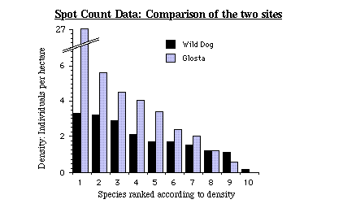
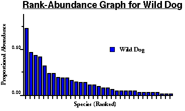
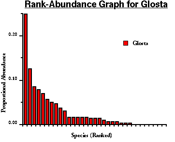

Back to Nakanai '93 Contents Page
Back to Nakanai '93 Contents Page
All the species that were recorded during the spot counts are listed; the values are the total number of individuals recorded at Wild Dog (A) and Mount Talawe (B). Population densities have been calculated for those species which were observed ten times or more (printed in bold). For these species, the first number is the number of individuals recorded, the second number is the density estimate (number of individuals per hectare).
| Species | Wild Dog | Mount Talawe |
|---|---|---|
| Oriental Hobby | 2 | - |
| Red-knobbed fruit dove | 5 | - |
| White-bibbed fruit dove | 3 | - |
| Torres Strait pigeon | 2 | 5 |
| Black imperial pigeon | 7 | - |
| Red-knobbed imperial pigeon | - | 4 |
| Finsch's imperial pigeon | 3 | - |
| D'Albertis' mountain pigeon | 26:1.7 | - |
| Brown cuckoo dove | 25 : 1.2 | 4 |
| Stephan's emerald dove | - | 1 |
| Rainbow lorikeet | 5 | 73: 27.0 |
| Eastern black-capped lory | 3 | 14 : 4.0 |
| Red-chinned lorikeet | - | 1 |
| Red-flanked lorikeet | - | 5 |
| Blue-eyed cockatoo | 1 | 23 : 4.5 |
| Eclectus parrot | - | 4 |
| Song parrot | 10:2.1 | - |
| Violaceous coucal | - | 1 |
| White-necked coucal | 2 | 5 |
| Glossy swiftlet | 19 : 1.5 | - |
| Moustached tree-swift | 14:1.1 | - |
| White-mantled kingfisher | 1 | - |
| Blyth's Hornbill | 14:0.2 | 11 : 1.2 |
| White-bellied cuckoo-shrike | 2 | - |
| Yellow-eyed cuckoo-shrike | 1 | - |
| Cicadabird | 9 | - |
| Varied triller | 8 | 5 |
| Spangled drongo | 8 | 25 : 3.4 |
| Shining flycatcher | - | 2 |
| Ashy honeyeater | 12 : 2.9 | 2 |
| Red-tinted honeyeater | 4 | - |
| N. B. red-headed honeyeater | 7 | 2 |
| New Britain friarbird | 44 : 3.2 | 37:2.4 |
| Black sunbird | 2 | 5 |
| Bismarck flowerpecker | 3 | 3 |
| Black-headed white- eye | 11:3.3 | 9 |
| Metallic starling | 11* | 21:5.6 |
| Yellow-faced myna | 28:1.7 | 17:2.0 |
| White-backed wood- swallow | 3 | - |
| Torresian Crow | 6 | 15 : 0.6 |
*All 11 individuals were recorded beyond the 30 metre radius, thus it is not possible to calculate a density estimate
A total of 33 species were recorded during the spot counts at Wild Dog compared with 25 at Mount Talawe.
Those species for whom population density estimates have been made are here ranked according to those estimates:-
| Rank | Wild Dog | Mount Talawe |
|---|---|---|
| 1 | Black-headed white- eye | Rainbow lorikeet |
| 2 | New Britain friarbird | Metallic starling |
| 3 | Ashy honeyeater | Blue-eyed cockatoo |
| 4 | Song parrot | Eastern black-capped lory |
| 5 | Yellow-faced myna | Spangled Drongo |
| 6 | D'Albertis' mountain pigeon | New Britain friarbird |
| 7 | Glossy swiftlet | Yellow-faced myna |
| 8 | Brown cuckoo dove | Blyth's hornbill |
| 9 | Moustached tree swift | Torresian crow |
| 10 | Blyth's hornbill | - |
The following graph compares the density estimates of these species, rank for rank.

These frequently-encountered species are obviously the commonest, and most obtrusive, species at each site. Their distribution amongst the different feeding types is as follows:-
| Diet | Wild Dog | Mt. Talawe |
|---|---|---|
| Lichens | 0 | 0 |
| Vegetarians | 4 | 2 |
| Carnivores: small insects | 1 | 0 |
| Carnivores: medium-sized arthropods | 1 | 0 |
| Carnivores: large arthropods, small vertebrates | 0 | 0 |
| Omnivores: mostly fruits | 1 | 1 |
| Omnivores: mostly insects | 0 | 1 |
| Omnivores: nectar + insects | 2 | 1 |
| Omnivores: true generalists | 1 | 4 |
The diversity of the two sites is illustated by the following graphs which plot each species recorded in the spot counts (including those recorded fewer than ten times) against its proportional contribution to the total number of individuals.


The information contained in these graphs can be summarised using Simpson's Diversity Index (Begon, et al '90).
Simpsons Diversity Index for Wild Dog and for Talawe is as follows:-
| Wild Dog | Mount Talawe | |
|---|---|---|
| D = | 15. 792 | 9.194 |